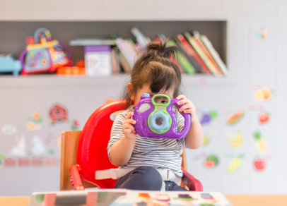

🩺 Revisiones médicas

Permiten vigilar el crecimiento y detectar posibles problemas.
Cuidamos la salud de quienes más amas
La salud de los niños es nuestra prioridad. Conoce la importancia de las consultas pediátricas, los cuidados infantiles y el crecimiento saludable.
Conocer más
El pediatra es el médico especializado en la salud de los bebés, niños y adolescentes. Ayuda a vigilar su crecimiento, desarrollo y bienestar.
Permiten vigilar el crecimiento y detectar posibles problemas.

Ayuda a proteger a los niños contra diversas enfermedades.

Promueve una alimentación adecuada para cada etapa.